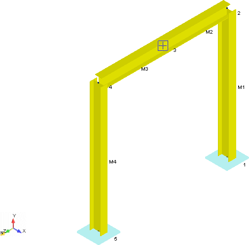

Viewing the Frame Model
.jpg) Now that the beam members are
defined, you should visually check whether the local axis of the
frame is correctly positioned in order to support a vertical load
downward at point 3, and support the horizontal forces from the
pipe in the X-axis.
Now that the beam members are
defined, you should visually check whether the local axis of the
frame is correctly positioned in order to support a vertical load
downward at point 3, and support the horizontal forces from the
pipe in the X-axis.
- Select View > Mode > Solid Model View to display the 3D graphical representation of the model shown below.

- Note that the beta angles are properly defined and that the strong axis of the beams is being loaded.